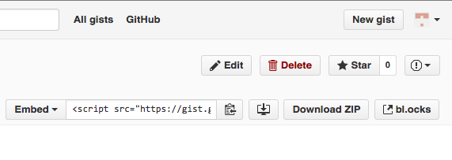
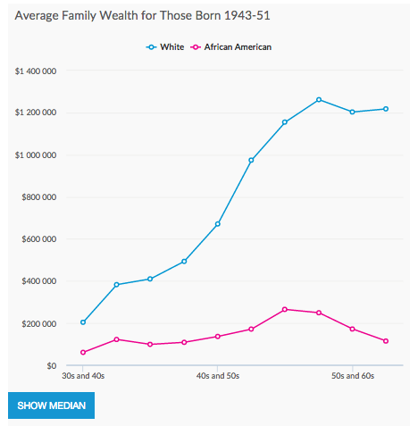

Gists reminders: Upload files with the add button (or drag and drop, don't paste in CSV data); name your web pages index.html so they will work in bl.ocks.org!
If you have issues with gist.github.com, especially with dragging in CSV files -- you can paste in the contents of the raw csv data (not from Excel, but from plain text), and name it with a .csv extension.
Let's go through the file together: js_errors_fix.html
Console.log and strings:
What will this print? Why?
console.log("simple_add(myobject.cats, myobject.dogs)");What about this?
console.log("Problem 3, the first json object is (fix the index in brackets):" + mydata.index)This works, but you're supposed to call the function I created for it, simple_add():
// fix to call the function with the cats and dogs properly
console.log("Problem 2, Add 2 values:" + " " + (myobject.cats + myobject.dogs));This data has an issue, but works when you divide. Let's discuss:
var myvalue = [
{"Name" : "Florida",
"Population": "19893297",
"Seats": 27
},
{"Name" : "California",
"Population": "38802500",
"Seats": 53
},
{"Name" : "Texas",
"Population": "26956958",
"Seats": 36
}
];
function divide(arg1, arg2) {
return arg1 / arg2;
}
divide(myvalue[0].Population, myvalue[0].Seats)Spaces in column names, avoid them: http://bl.ocks.org/NERD-rat-LAB/27157c1feea679364fc0
Nested data: http://bl.ocks.org/jashcny/d5632fe6efeb61c39af4
Also nested here: https://gist.github.com/luluwuluying/25b6b78d9a1010f9804e
You need a single row of column labels to identify fields; Javascript won't handle the second level of header info, or nested left-hand-side data with missing labels.
Years as column names! Beware, they won't work with dot notation. You may want to rename them to "Year2001" etc.
Strings and Numbers, beware again -- the years here should not have quotes and commas in them, there was a type conversion in some spreadsheet tool that went bad: http://bl.ocks.org/Shewitt95/eb7ce3c5b3d5663074e0
Open a terminal window inside the directory/folder called "interactive-vis-course".
Type: git pull
If all works ok, you should see the new files coming down.
If you get an error, it's probably because you modified a file and it has a merge conflict. Make sure you rename any files you modified and ideally move them to another location, type git stash and then try git pull again.
If the gist url is https://gist.github.com/arnicas/743b4b3406d139ab65fa
then the bl.ocks url is: http://bl.ocks.org/arnicas/743b4b3406d139ab65fa.
NOTE: No https on the start of the block! Also, you can use this Chrome plugin to help you view blocks from gists faster -- notice the right side!

Here are some basic, useful commands in the terminal window. The words "folder" and "directory" are synonyms.
| Command | What It Does |
|---|---|
ls |
list files here in this folder |
cd .. |
change directory up one level (..) |
cd Week1 |
change directory down into Week1 folder |
pwd |
current working directory (entire path) |
mkdir MyFolder |
make a folder here called "MyFolder" |
cd MyFolder |
change directory into the new MyFolder |
ls |
list files here in this directory |
mv file1.txt MyFile.txt |
rename file1.txt to MyFile.txt |
rm filename.txt |
remove/delete filename.txt |
ls Week[tab] |
Tab-complete filename that matches Week-something. |
ls *.html |
list all files in this folder that end with .html |
less file.txt |
prints out the contents of file.txt - use 'space' to advance by screenful |
git pull |
in a github repo, "pull" the newest changes |
python -m SimpleHTTPServer 8001 |
Start a web server in this folder; url localhost:8001; use control-C to shut it down when done. |
Remember you can always tab-complete. It'll just beep and do nothing if it doesn't match anything. If you have files or folders with spaces in their names, tab-complete is the easiest way to "match" them, rather than trying to type them out.
I strongly recommend reviewing this book: http://cli.learncodethehardway.org/book/
See, e.g.,
My personal test for a new library: will it make it hard for me to create dot plots and slope graphs? These are uncommon options in charting libraries, but data vis popular forms.
Let's look at this project in some detail: http://datatools.urban.org/Features/wealth-inequality-charts/. Look at the source code, too.
Resources:
Trying to use data in CSV's with High Charts required me to reformat the CSV data into different structures. Long, wide, and somewhere in between. Be aware that how you structure your data will impact how easily you can use it in your Javascript without having to do rewriting of objects after you load it. (Have a look at this on wide vs long data: https://en.wikipedia.org/wiki/Wide_and_narrow_data.)
More of my local examples:
Dimple is built on top of D3. You can find the docs with examples here and the API docs here. It seems to be especially good with timeseries data, but has some missing example detail.
Have a look at dimple_barchart.html.
function make_barvis(data, selector, color) {
// passing in the data array, an idenfitier to put the graph into, and
// a custom color
var svg = dimple.newSvg(selector, 600, 600);
var myChart = new dimple.chart(svg, data);
myChart.setBounds(190, 10, 400, 500); // x y width height
var xAxis = myChart.addMeasureAxis("x", "year2015");
xAxis.title = "Access to Clean Water (%)"; // custom label
var yAxis = myChart.addCategoryAxis("y", "name");
yAxis.title = "Region"; // custom label
yAxis.addOrderRule("year2015"); // largest at top!
myChart.defaultColors = [new dimple.color(color)];
myChart.addSeries(null, dimple.plot.bar);
myChart.draw();
}For a dot plot alternative, try dimple_dotplot.html. This was not hard to make, actually.
For all the libraries out there, you'll discover that using their defaults is easy, but customizing stuff ends up being hard or a big hunt through their docs/code/StackOverflow. Writing it yourself from scratch in D3 might often end up easiest.
This is a trick you get with interactives -- the "recast" the problem in a new way, or "switch" the view of the data. This can mean scale change, or annotation/highlighting different data. Here's a couple examples:
A very simple template for a toggle button is in the file simpler_switcher.html. This explains some of what is going on in the next example that uses Highcharts, except it uses 2 buttons instead of one and no graphs.
Here is a useful excerpt you can use in the homework for a "switcher": highcharts_switch.html. (This is extracted from the Urban Institute project).

You'll implement one with your own data for homework if you want to accept the challenge!
Last week you loaded a data file from CSV into a web page. Now we're going to do a simple DOM operation with D3 using that data file. (This will be easier than the Highcharts stuff!)
Let's look at d3_simple_append.html and how that works. We're just appending a <p> tag to the "body" of the document!
Now, in create_p_from_data.html, there is some more fanciness going on with your loaded data. Instead of using a for loop in javascript, we'll use a nicer functional construct, the forEach loop:
var body = d3.select("body");
d3.csv("data/water_improvement_data.csv", function(error, mydata) {
if (error) { console.log("error loading", error); }
console.log("My first object:", mydata[0]);
// This is not the real D3 'way' yet. This is a javascript
// loop that will add p elements for each item in the data set
// manually. In D3, you will learn to use enter() eventually for this.
mydata.forEach(function (d) {
console.log("In this loop, d is now ", d);
// body was declared above, before the d3.csv!
body.append("p").text(d.name + " " + d.year1990 + " " + d.year2015);
});
});
In this loop above, we loaded our data into a variable called "mydata". Using the forEach loop, every row of the data becomes "d" as we go through the array. We add a paragraph p to the body each loop through, with text content made up of the fields of the data row: d.name and d.year1990 and d.year2015. The fields "name", "year1990", and "year2015" are the columns in my CSV data set.
For your homework, create <p> tags for each row of your data, using the template in the create_p_from_data.html file. You will need to load your own data and refer to your own columns in the string your build for the p tag.
Resources:
Some of the reading for this week will motivate the interactive vis techniques we are going to cover in this class.
The Eyes Have It (1996), Ben Shneiderman - a classic article that features the mantra everyone must memorize:
Overview first, zoom and filter, then details on demand.
Overview first, zoom and filter, then details on demand.
Overview first, zoom and filter, then details on demand.
Overview first, zoom and filter, then details on demand.
Overview first, zoom and filter, then details on demand.
Overview first, zoom and filter, then details on demand.
Video by Scott Murray introducing D3 for his course, not all of which applies (we aren't using his files)-- but which reviews selections. And reviews the console use and method chaining. SVG will be introduced bit at the end, which we will start on in a couple weeks.
Do the readings/videos list just above. Memorize the mantra. Plus these:
Homework 1: Two Charts
(Required: 25pt): Make 2 charts of your data on the same page, using 2 different chart types (e.g., line chart, bar chart, area...). You may need another data set if you don't have 2 quantitative (numeric) variables in your data set. You can use Highcharts or Dimple.js (or another library if you prefer). Add a paragraph of text with the charts that explains them a bit more, what the data source is, and use appropriate CSS styling.
For extra credit (15pt), use the structure and button switch button functionality in highcharts_switch.html or simpler_switcher.html to toggle between your two charts. Adjust the text, labels, tooltips, etc. to match your data and data source. Be sure it has useful tooltips if you can control that.
Points: (25pts, plus 15pt extra for toggle). Check it in as a gist and send me the link to the gist, "Week2: Two Charts."
For your gist: Be sure the html page is called index.html. Be sure your path to Highcharts is a CDN as mine is, not local, link. My examples show the CDN path you should use in your code.
Homework 2: Paragraph Data load
Read in one of your csv data files and verify your objects are there as expected. Prove it to me by creating <p>'s on the page using d3 in a forEach loop (you can remove the jquery approach). Make a gist, and send me your gist link, "Week 2: Paragraph Data load." (10pt) Name the web page itself index.html so it will work in a blocks example!